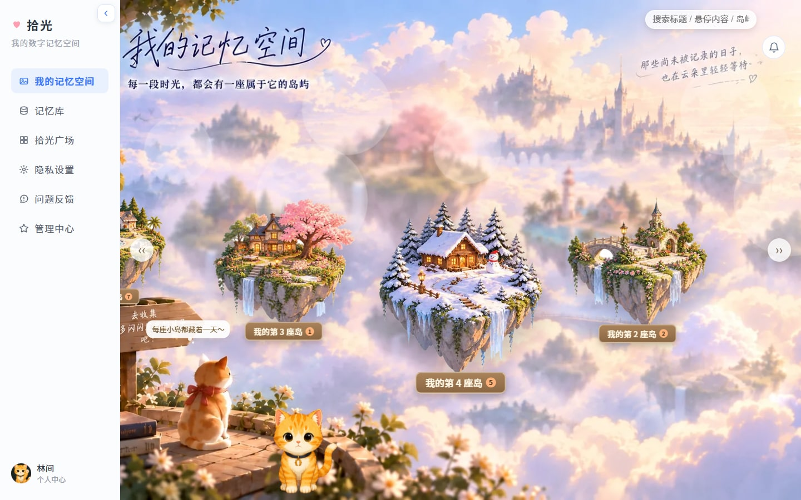
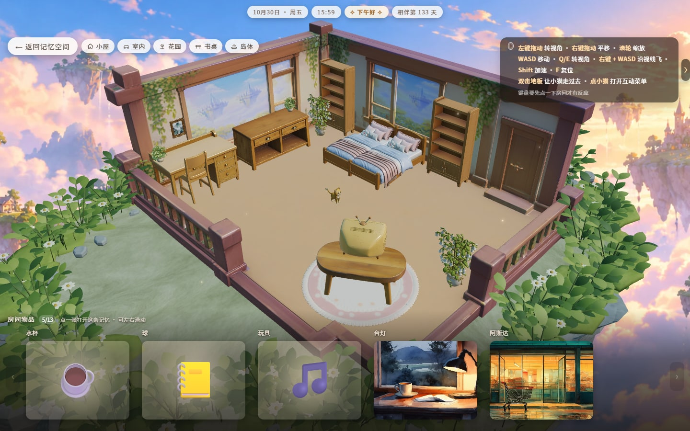
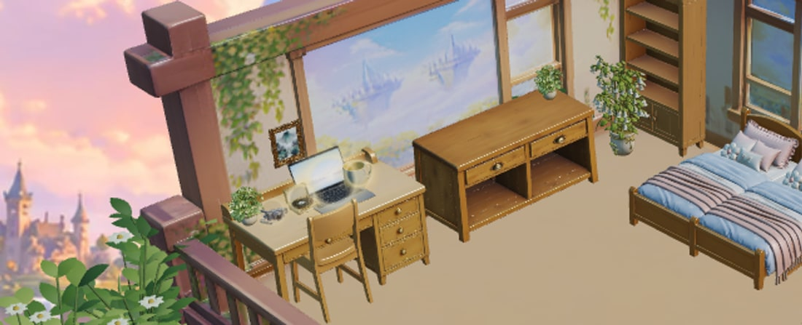
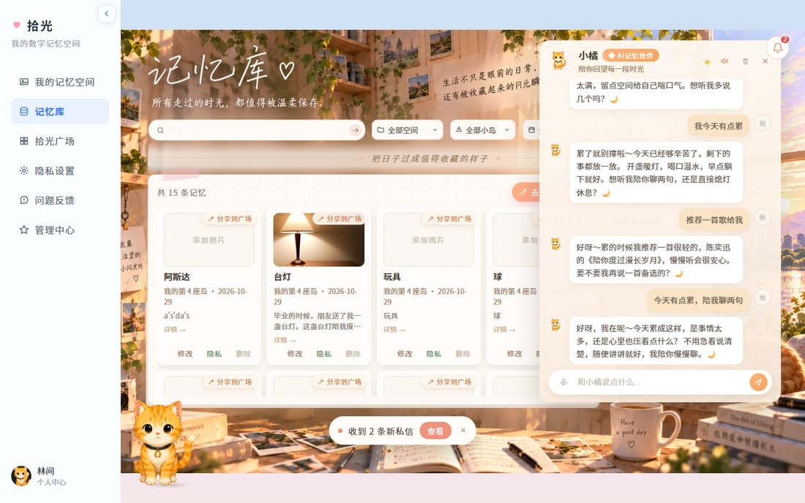
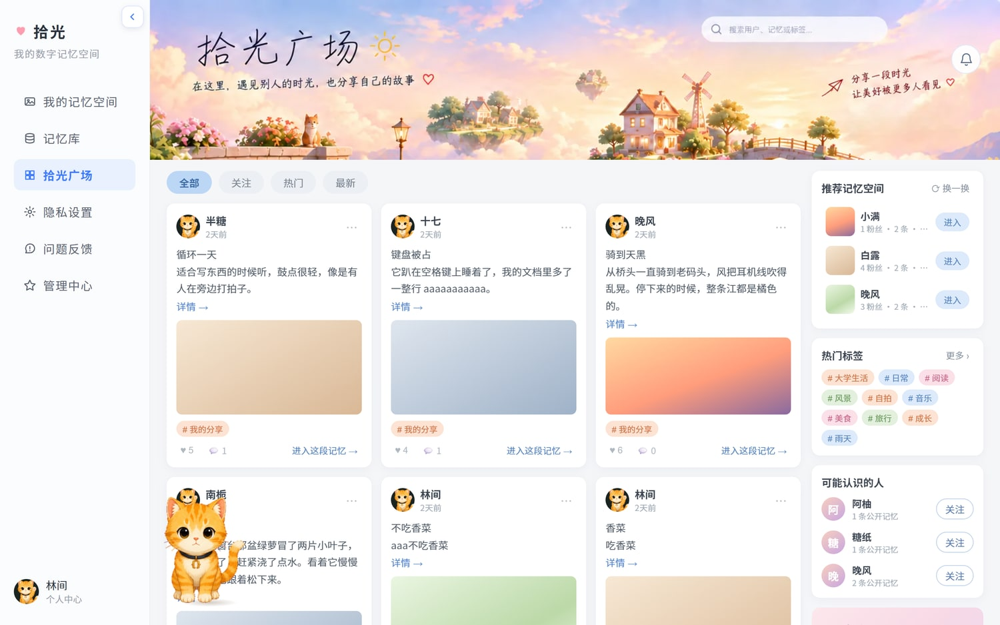
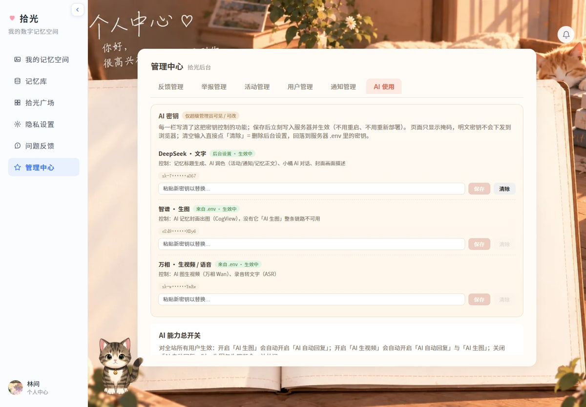
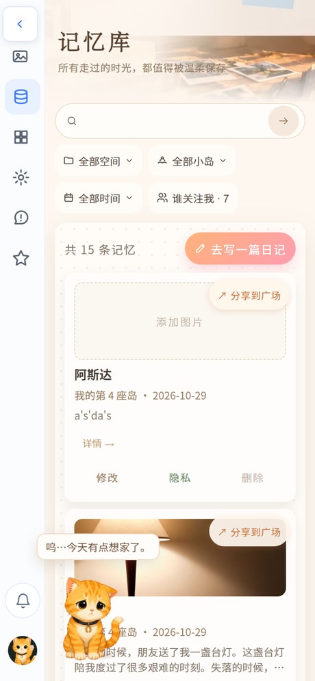
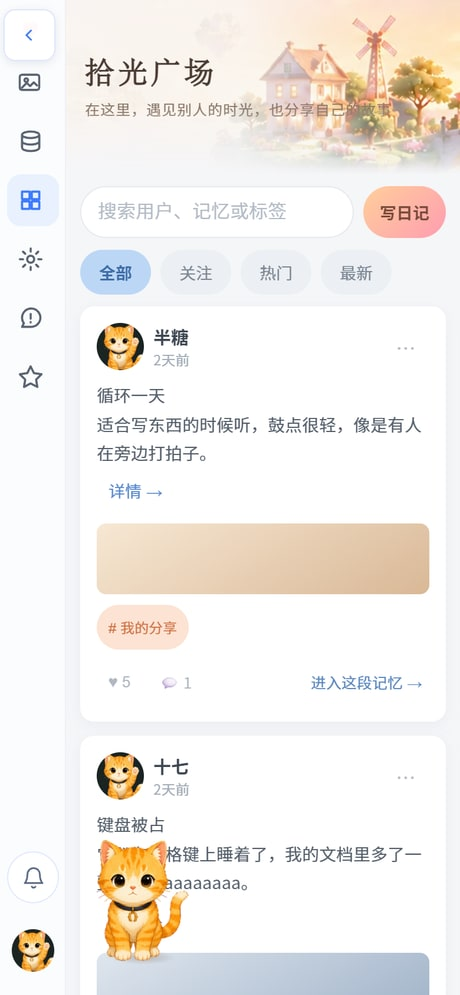

一个把记忆建成房间的记录产品。
你写下文字，AI 替你起标题、画封面、剪一段小视频；
这些记忆最后变成一座浮空岛上的 3D 房间——
合上书的夜晚是一本绿色的书，老唱片是一台唱机，陪外婆煮面的下午是一只茶杯。
记录这件事，门槛已经很低了：备忘录、日记本、朋友圈。但真正被留下来的很少。 原因不在「写」，而在「回看」——写下来的东西被塞进一个时间倒序的列表里， 越积越多，越翻越累，最后连自己都不愿意打开。
我们观察到三个具体的卡点：一是写的时候有负担（要起标题、要配图、要挑分类，索性不写了）； 二是回看的时候没有线索（只记得"某天心情很差"，搜不出那一条）； 三是记录与情绪脱节（文字是平的，画面是空的，读完没有共鸣）。
拾光的做法是把「记录」还原成「空间」：每一条记忆不再是一行字， 而是房间里真实存在的一件东西。你可以走进自己的房间，看一眼桌上的杯子， 就知道那个下午发生过什么。
| 模块 | 用户能做什么 | 关键能力 |
|---|---|---|
| 欢迎页 | 看到自己的记忆以相纸形式浮在窗前；点击或上滑进入 | 情绪化的入口视觉、登录态一键续期 |
| 我的记忆空间 | 俯瞰自己的浮空群岛，每座岛对应一个阶段或主题；点岛进屋 | 岛屿总览、搜索、岛屿新建/改名 |
| 记忆库 | 按空间、岛屿、时间、关注筛选；搜索；写、改、删、分享 | 语义搜索、语音输入、AI 起标题、AI 增强 |
| 3D 记忆房间 | 走进房间看摆件，点摆件弹出这条记忆；切换五个视角 | 摆件语义检索、布局算法、宠物游走 |
| 小橘（AI 伙伴） | 在房间里和它说话，它会结合你的记忆回应，并且用语音念出来 | 对话、语音合成、情绪陪伴 |
| 拾光广场 | 看别人公开的记忆，点赞、评论、关注、进入对方的这段记忆 | 公开记忆投影、热门/最新、举报 |
| 隐私设置 | 控制单条记忆是否公开、管理已分享的内容 | 分享范围、撤回分享 |
| 个人中心 | 资料、头像、宠物、消息（含系统私信）、陪伴天数 | 私信、通知 |
| 管理中心 | AI 密钥与能力总开关、用户与权限、活动、举报处置、通知 | 密钥热更新、用户级 AI 授权、匿名处置 |
第一步 · 进入。打开在线地址，欢迎页是一扇窗：窗外是城市日落，窗内是你的书桌， 记忆以相纸的形式飘在窗前。点击「开始探索」或直接上滑即可进入（已登录会自动续上，不需要重复登录）。
第二步 · 建一座岛。「我的记忆空间」里，每座岛代表一个阶段或主题—— 有人按年份分（2024 / 2025），有人按主题分（家人 / 旅行 / 工作）。岛屿自带不同地貌（樱花、雪原、城堡）， 进哪座岛，房间就是哪种气质。
第三步 · 写一条记忆。点「去写一篇日记」，弹窗里只有「内容」是必填的： 不用想起标题——保存时由 AI 读正文生成；可以顺手加照片、视频、录音， 或者直接按麦克风说一段话，转成文字填进正文。默认「仅自己可见」，想公开在卡片上点「分享到广场」。
第四步 · 让 AI 帮你把它变得好看。保存成功后会自动弹出一个选择框： 「还要为这条记忆加点什么？」——AI 生成封面图片、AI 生成视频、润色文字，三项可多选，也可以都不选。 生成结果会明确标注「✨ AI 生成」，和你自己传的照片分开展示。
第五步 · 走进房间。回到「我的记忆空间」，点那座岛，就会落到一间 3D 房间里。 房间里已经按你的记忆摆好了东西：点桌上的唱片机，会弹出那条关于唱片的记忆； 底部还能左右滑动浏览这间房的全部记忆。视角可以在「小屋 / 室内 / 花园 / 书桌 / 岛体」之间切换。
第六步 · 让小橘陪你说两句。房间里那只橘猫叫小橘。点它，就能用文字或语音聊天—— 它会结合你写过的记忆回应，比如你说「今天好累」，它会先安慰你，再提一句你以前记过的相似时刻， 并且用语音念出来。
| 方式 | 说明 |
|---|---|
| 在线体验 | https://timepick-memory.app.workbuddy.host/ —— 已部署，无需安装，手机浏览器同样可用。 |
| 本地运行 | 解压提交包内的 源码/，装依赖→配环境→构建→启动，共四条命令（见附录 B）。 只配 JWT_SECRET 一项也能完整跑起来，AI 能力会自动降级为「未配置」提示，不影响记录、房间与广场。 |
| 账号 | 注册需要注册口令（默认在服务端环境变量里，默认值「优乐美」），避免公开站点被批量注册；管理员账号由环境变量指定。 |
一句话概括：别人把 AI 加在「生成」上，我们把 AI 加在「你得自己动手」的每一个环节上；别人把 3D 当皮肤，我们把 3D 当成记忆的第二个数据视图。

我们没有把所有记忆堆进一个房间，而是做成「一座岛一间房」。原因是：记忆天然有归属感， 一段时期、一类人、一种心情，本来就不是同一种空气。岛与岛之间漂在云上，进岛的过渡是「从云层落下去」， 这一层空间感本身就是叙事的一部分。
房间内部沿用固定的空间骨架（床、书桌、书架、柜子、地毯、露台）， 但摆什么、摆在哪、朝哪边，全部由你写过的记忆决定。同一套房型，两个人打开会是两间完全不同的屋子。
这是整个 3D 部分最核心的一件事。很多同类作品的 3D 房间是「固定装修 + 换贴图」， 而拾光要求：每一条记忆都要被翻译成一件合理的家具，而且翻译得让人服气。
实现上是一条三条通道并联的检索链路：先做中文分词（单字 + 二元组）的 TF-IDF 字面匹配， 再走 text-embedding-v3 的 1024 维向量做语义召回， 两者按 0.55 × 向量 + 0.45 × 归一化字面分 融合； 当最高分不够自信、并且配置了文本大模型时，再让模型在候选清单里「挑一件最合适的」并给出理由。
检索结果不会每次现算——它写回数据库的 prop_furniture 字段。 这样房间的布局计算是一个纯同步函数，重排、重启、换设备都不会让物件「漂移」； 一旦发现某间房有记忆缺摆件行，系统会把整间房按规则重排一次自愈。
| 用户写的原文（节选） | 检索到的摆件 | 落在房间的哪里 |
|---|---|---|
| 合上书的时候天已经黑了，心里堵得慌 | greenbook（绿皮书） | 书架隔板上，与视线齐平 |
| 小时候每次去外婆家，她都会下一碗面 | cup（杯子） | 书桌桌面，靠里侧 |
| 翻出爸爸年轻时候的唱片，放了一整晚 | record（唱片机） | 柜子上表面，正面朝房间中心 |
| 旧相册里那个穿校服的自己 | camera_my（相机） | 书桌桌面，与台灯错开 |
| 加班到天亮，电脑屏幕的光打在脸上 | computer（电脑） | 书桌桌面正中 |
表 1 同一条记忆在不同措辞下都能被正确映射；表内为线上实际结果，均已落库。
第一版布局用「黄金角螺旋 + 按数量轮转朝向」，结果很糟：所有家具挤在一个半径 1.35 米的圆里， 书柜拿到 180° 时会背面朝人，桌上该放东西的地方空着。现在的做法是把房间切成 7 个靠墙的固定墙位槽（后墙、后左、后右、左墙、右墙、左前、右前），每格只放一件， 天然不重叠；每个槽自带一个「墙外法线」，用来算朝向：


3D 首次打开要下载三十多 MB 的模型与贴图，这是硬成本。我们的处理是： 不做一个假的匀速进度条，而是把真实字节数（资源按 URL 累加 + XHR 进度事件） 与一条平滑曲线取较大值，封顶 92%，等场景真正就绪的信号到了再补满——所以进度条不会「卡在 99% 骗人」， 也不会一阵一阵地跳。这层等待态由宿主页面接管（小猫在云上跑 + 进度文字 + 「第一次打开要多等一会儿，之后就快了」的说明）， 3D 引擎只负责在上报就绪后接管画面。二次打开走浏览器缓存，实测约 7 秒。
我们的 AI 不是为了在界面上多一个按钮，而是逐条消掉「用户得自己动手」的环节。 下面这张表就是项目里 AI 实际站的位置：
| 环节 | AI 做了什么 | 用到的模型 | 用户看到什么 |
|---|---|---|---|
| 写 | 只写正文，标题由 AI 读内容后生成 | DeepSeek · deepseek-chat | 保存后卡片上自动出现一句像人起的标题 |
| 存 | 为记忆画一张插图 / 剪一段 3～5 秒的流动画面 | 智谱 cogview-3-flash；万相 wan2.2-i2v-flash | 详情里出现「✨ AI 生成」区块 |
| 改 | 把口语化的流水账润色成可读的叙述，保留原意 | DeepSeek · deepseek-chat | 正文变得更顺，可随时改回 |
| 找 | 换一种说法也能搜到（"朋友送的礼物陪我熬过最难的日子"） | text-embedding-v3（1024 维） | 命中的卡片上标「≈ 意思相近」 |
| 说 | 结合你的记忆回应情绪，并把回答念出来 | qwen3-asr-flash → deepseek-chat → qwen3-tts-flash | 小橘边说边出现文字气泡，语音 1.8 秒内起播 |
| 摆 | 把这条记忆翻译成房间里的一件家具 | 字面 TF-IDF + text-embedding-v3（+ DeepSeek 兜底判定） | 房间多了一件「说得通」的摆件 |
| 管 | 密钥与能力的集中管理：总开关 + 用户级授权 | —（工程能力） | 管理中心里三把钥匙的状态与掩码 |

每条记忆都带一个 mood（开心、平静、想念、难过……），这个字段不只是标签： 它决定卡片的配色与渐变、房间的氛围光、摆件的倾向，也决定小橘说话的语气。 同一条「今天很累」，在「开心」的日子和「难过」的日子，读起来是两种颜色。
| 能力 | 模型 / 接口 | 触发位置 | 失败与降级 |
|---|---|---|---|
| 标题生成 | deepseek-chat | 保存记忆时（服务端） | 失败则用正文首句截断兜底，不阻塞保存 |
| 文字润色 | deepseek-chat | 保存后弹窗勾选 | 返回原文并提示「这次没润色成功」 |
| AI 封面 | cogview-3-flash | 保存后弹窗勾选 | 提示未配置/失败，不影响记忆本身 |
| AI 视频 | wan2.2-i2v-flash（图生视频） | 保存后弹窗勾选 | 异步任务，失败只影响该片段 |
| 语音转文字 | qwen3-asr-flash | 写作弹窗里的麦克风 | 失败保留已写内容，提示重录 |
| 语音合成 | qwen3-tts-flash | 小橘回答时 | 合成失败退回纯文字气泡 |
| 记忆语义搜索 | text-embedding-v3 | 字面搜索 0 命中时才请求 | 未配置则只做字面搜索，功能不报错 |
| 摆件语义检索 | 字面 TF-IDF + text-embedding-v3（+ DeepSeek 判定） | 新建/编辑记忆、房间自愈时 | 向量不可用则纯字面；都拿不准退到「日记本」 |
摆件检索的结果写进 memory_item.prop_furniture。 原因是：如果每次进房间都重新请求模型，同一段文字可能给出不同结果， 用户今天看见桌上的杯子、明天变成唱片机——这比「摆得不够好」更伤信任。 落库之后，布局计算是纯函数，重排与重启都不会改变房间的样子； 要改判定逻辑，改的是这一列，而不是运行时。
语音合成耗时随字数线性增长：一整段 300 字要 17 秒才出声，用户早就关掉了。 我们的做法是把回答切成首句（6～26 字）+ 长尾两段并发请求： 首句回来立刻播，长尾在播放的间隙里合成，接得上就无缝衔接。 实测首句 1.78 秒起播，整段 19.4 秒的内容听起来像一口气说完。 另外官方返回的音频链接 24 小时后失效，所以合成完立刻转存到自己的 /uploads/tts/，按内容哈希命名，重复的句子直接复用。
语义搜索最容易翻车的地方是阈值。我们用真实语料做了校准： 「换个说法」的相似度落在 0.5～0.6，不相关的内容 ≤0.44，原样措辞 0.75～0.86。 最终取 0.5 的绝对阈值 + 0.1 的相对落差（只保留靠近最高分的那些）， 并且只在字面搜索 0 命中时才请求向量接口——常规搜索零额外延迟，也不会因为语义分数低而污染结果。 校准样本里必须放「换说法」的句子，只放「标题含关键词」的样本，会把阈值定到 0.6，换措辞的查询就全被挡在门外。
| 验证项 | 结果 |
|---|---|
| 记忆语义搜索 | 「朋友送的礼物陪我熬过最难的日子」→ 命中预期记忆，相似度 0.648；「量子物理实验」→ 无结果（最高 0.402，低于阈值 0.5，不乱召回） |
| 摆件检索 | 合上书→greenbook、外婆煮面→cup、老唱片→record、旧相册→camera_my、天亮→computer，5/5 符合预期且全部落库 |
| 语音链路 | 首句 1.78 秒出声，两段音频依次播放（+1.78 s / +3.46 s），无中断、无报错 |
| 3D 房间 | 线上 6 个房间逐个请求布局均正常；首屏冷启动约 24 秒（34 MB 资源），缓存后约 7 秒；无控制台报错 |
| 举报与处置 | 举报 → 管理员下架 → 记忆置为不可见 + 广场投影同步撤下；举报人与作者各收到一条匿名私信，双方均看不到对方身份 |
Express 5 单入口 + SQLite 单文件。为了「别人拿到就能跑」，数据库驱动做了三级兜底： 本机优先 better-sqlite3（原生模块，最快）→ Node 22+ 内置的 node:sqlite（不需要安装任何包）→ 纯 WASM 实现（零编译）。对外是同一套 exec / prepare().get|all|run 接口， 换环境不用改一行业务代码。云上沙箱曾经因为原生模块在 dlopen 阶段段错误（try/catch 接不住，表现为「服务没起来」）， 所以发布配置里干脆不声明原生依赖，直接走内置驱动。
纯向量检索在中文短句上会「太松」（把不相干的也拉进来），纯字面检索又「太紧」（换个说法就找不到）。 所以两条通道并联：字面用中文单字 + 二元组的 TF-IDF 余弦（对短句、专有名词稳）， 向量用 text-embedding-v3 的 1024 维（对改写、近义稳）， 最后 0.55 向量 + 0.45 归一化字面 融合排序。语料变更时按指纹自动重建向量缓存， 不需要手工清缓存；同一套检索逻辑同时服务「摆件映射」和「记忆搜索」两处。
输入方向：浏览器录音 → qwen3-asr-flash 转写 → 追加到正文（不清空已写内容）。 输出方向：DeepSeek 生成回答 → 切「首句 + 长尾」两段并发合成 qwen3-tts-flash → wav 转存到本地 /uploads/tts/（按内容哈希命名，规避官方链接 24 小时失效） → 首句回来即播，长尾在播放间隙接上。
以下图片均截取自线上运行版本（2026-10-30），未做合成或修饰；3D 房间与摆件为实际渲染结果。




本项目此前未在任何平台公开发表，也未参加过其他赛事、未获得过奖项。
代码托管在 GitHub（仓库 asdasd123-w/TimePick，公开可浏览）， 这是本项目唯一的对外发布形式，用于版本管理与评审查看，不构成「已发表作品」。 线上演示站点为本项目自有部署，非第三方平台收录。
拾光是从零开始的原创项目，不是对某个现有产品的二次开发，也没有基于任何模板或框架脚手架生成业务代码。 它的每一层（页面、接口、数据库结构、3D 房间布局算法、检索链路）都是为本项目写的。
| 组件 | 用途 | 说明 |
|---|---|---|
| Vue 3 / Vue Router / Pinia | 前端框架 | 通用框架，未做业务定制 |
| Vite 8 | 构建工具 | 默认配置为主，仅按需调整产物目录策略 |
| Express 5 | HTTP 服务 | 只用到最基础的路由与静态托管 |
| Cocos Creator 3.8.8 | 3D 引擎 | 引擎与基础场景能力来自官方；房间骨架、摆件加载、交互与朝向计算为本项目实现 |
| SQLite 驱动 | 数据存储 | better-sqlite3 / node:sqlite / wasm 三选一，见 4.3 |
表 2 第三方依赖清单；美术资源中，房间基础模型与宠物精灵图来自公开素材，摆件摆放规则、语义映射与全部交互逻辑为自制。
这个项目从最初的原型到现在，有几次比较大的自我推翻，写在下面是因为它们直接决定了现在的形态：
| 目录 / 文件 | 内容 |
|---|---|
| 源码/ | 完整可运行工程：前端 src/、后端 server/、3D 产物 public/room3d/、环境变量示例 |
| 02-3D房间工程/ | Cocos Creator 3.8.8 工程源文件（场景、脚本、模型、贴图），可用编辑器打开继续修改 |
| 03-运行与部署说明/ | 运行说明、环境变量示例、部署与数据迁移说明 |
| 04-作品文档/ | 本文档及配图 |
| 项目.zip | 源码 + 3D 工程的压缩包，便于一键解压 |
| 变量 | 是否必填 | 作用与缺省行为 |
|---|---|---|
| JWT_SECRET | 建议必填 | 会话签名密钥；若不填/仍是占位符，服务端每次启动随机生成（重启后需重新登录） |
| SUPER_ADMIN_USERNAME | 可选 | 超级管理员手机号；不填则超管功能关闭 |
| REGISTER_PASSPHRASE | 可选 | 注册口令；不填回落到默认口令 |
| DEEPSEEK_API_KEY | 可选 | 标题、润色、对话；不填则这些能力提示「未配置」 |
| ZHIPU_API_KEY | 可选 | AI 封面；不填则不出现封面选项 |
| DASHSCOPE_API_KEY | 可选 | 向量检索、图生视频、语音转写与合成；不填则摆件检索退化为字面通道 |
三个 AI 密钥也可以在管理中心的「AI 使用」里填写（写库后立即生效，优先级高于环境变量），只有超级管理员可见、可改。
| 项目 | 配置 |
|---|---|
| 本地 | Windows 11 · Node 22 · Chrome · SQLite 单文件库 |
| 线上 | 沙箱容器（http-service），静态资源与 API 同源，3D 产物整包部署 |
| 数据规模 | 8 个账号 · 21 条记忆 · 6 座岛 · 8 条广场动态 · 21 件房间摆件 |
| 页面验证 | 桌面 1440×900 与手机 390×844 各 7 个页面，共 14 组：横向溢出 0、脚本报错 0、4xx 0 |
| 干净部署验证 | 从提交包解压到全新目录：npm install → 只填 JWT_SECRET → build → 启动， 注册、建岛、写记忆、进房间全链路通过；未配密钥时启动日志明确提示，AI 能力自动关闭 |
—— 全文完 ——
拾光 · TimePick | 作品介绍文档 | 2026 年 10 月
在线体验：https://timepick-memory.app.workbuddy.host/
代码仓库：https://github.com/asdasd123-w/TimePick